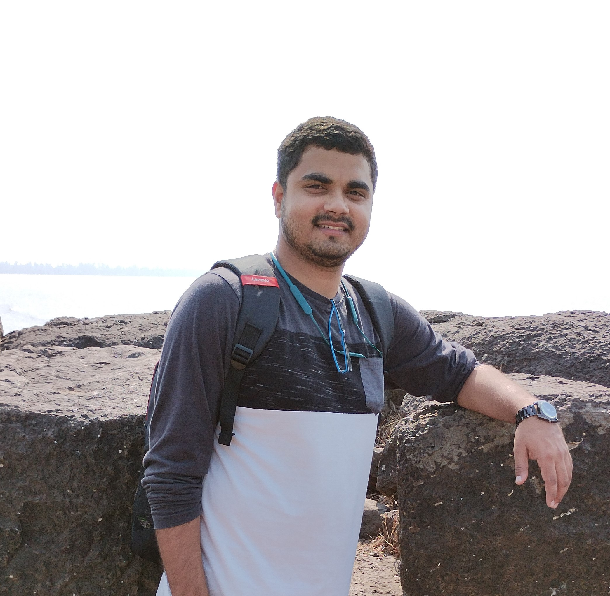

|
Prashant Trivedi
I am a post-doctoral scholar at the Department of Computer Science and Engineering (CECS) at the University of Central Florida, USA,
working closely with Dr. Amrit Singh Bedi
and Prof. George Atia.
Before this, I was an ML Scientist at the One Network Enterprises.
I have received my Ph.D. from the Industrial Engineering and Operations (IE&OR)
department at the Indian Institute of Technology Bombay (IIT Bombay)
under the expert supervision of Prof. N. Hemachandra.
My research focuses on advancing decision-making under uncertainty, with an emphasis on both
theoretical and practical aspects of machine learning, optimization reinforcement learning (RL), multi-agent systems,
and AI alignment. Specifically, I am interested in
-
Machine Learning:
Exploring reinforcement learning (RL), multi-agent reinforcement learning (MARL), deep reinforcement learning, multi-armed bandits.
-
Optimization:
Investigating problems at the intersection of optimization, stochastic approximation, and AI with human feedback.
-
Sequential Decision Making::
Applying various Markov decision process, dynamic programming, stochastic dynamic programming methods for various
applications.
-
AI Alignment:
Addressing challenges in robustness, prompt optimization, safety, reliability
within the context of reinforcement learning from human feedback (RLHF).
Email •
Google Scholar •
Linkedin •
CV
|

|
Research
|
|
"Basically, I'm not interested in doing research and I never have been... I'm interested in understanding,
which is quite a different thing. And often to understand something you have to work it out yourself
because no one else has done it." — David Blackwell
|
|
Preprints
|
|
Journal Publications
|
|
Peer Reviewed Conferences
|
Paper and Poster Presentations
|
Internships/Workshops/Summer Schools
-
Attended and presented a poster at Online Asian Machine Learning School (OAMLS) 2022 from Dec 8-10,and Dec 15-16, 2022
-
Attended Online Asian Machine Learning School (OAMLS) 2021, from November 8-19, 2021
-
Participated in the program Advance in Applied Probability II (Online) conducted by ICTS Bangalore from Jan 04 to Jan 08, 2021
-
Research intern at IBM, Banglore from May 27 to August 24, 2020
-
Attended The Indo-French Center for Applied Mathematics (IFCAM) summer school on Mathematics for Data Science at IISC, Bangalore from July 15-27, 2019.
-
Attended Game theory GURUKULAM 2017 and 2018 conducted by Prof. TES Raghavan (Emeritus Professor Department of Mathematics, Statistics, and Computer Science University of Illinois at Chicago) at his village Pulavanur, Panruti Chennai.
|
Academic Services
-
Reviewer of AISTATS 2023 and 2024.
-
Volunteer at 51st Annual Convention of the Operations Research Society of India (ORSI)
and International Conference on Emerging Trends in Operations Research and Management Science (OR/MS) held at IIT Bombay.
|
|

|
Website style cloned from here,
here, and
here.
Last updated on: November 30, 2023.
|
|